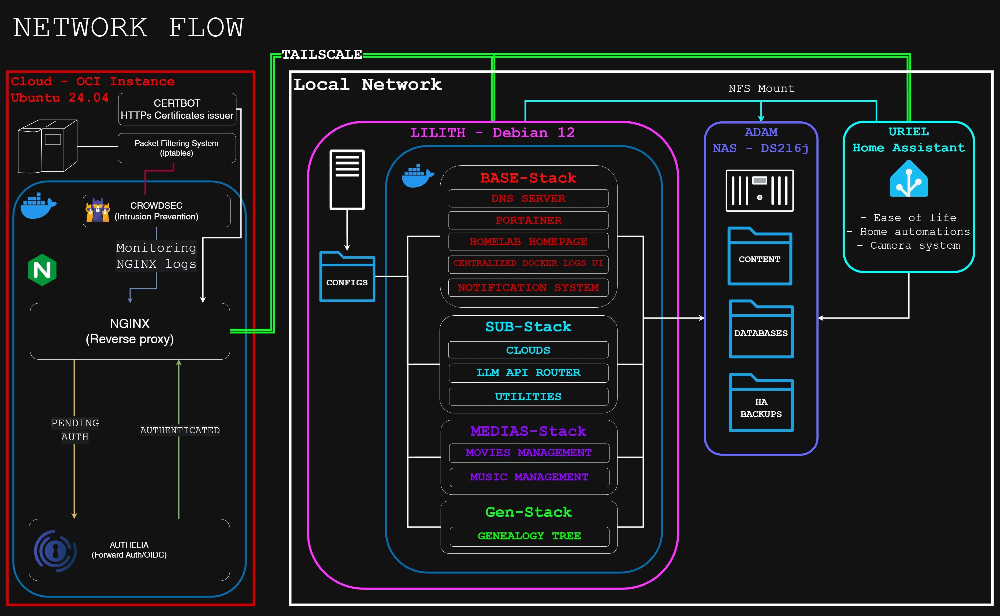

MAGI - Homelab
[2026] Internet-accessible home server with a variety of tools and services I use daily. The local setup is comprised of 3 devices, and an Oracle Cloud instance handles public domains access forwarding, authentication and security.
In a world where you are less valuable than the data
you produce, owning it is what gives you back your digital freedom.
DEVICES
0.0 Oracle Cloud Instance
- Crowdsec monitors Nginx logs for potential threats, including layer 7 DDOS attacks
- Authelia provides OIDC to applications supporting it, and forward auth for those that don't
- Certbot automatically renews SSL certificates
- Nginx proxies to the backend services via Tailscale to avoid port openings on my network
1.0 ADAM (NAS)
Synology DS216j
- 2 bays NAS mounted via NFS to both local devices
- Stores contents and databases of services
- Home Assistant backups
- RAID 1 Configuration (identical copies)
2.0 LILITH (Main Server)
Raspberry Pi 5 8GB RAM
- 36 Containers accross 4 stacks
- Clouds, Utilities, and other services
- Config files and scripts
3.0 URIEL (Home Assistant)
Raspberry Pi 4b 4GB RAM
- Ease of life home management
- Camera system
- Centralied reminders and household schedules
TECHNICAL DETAILS
SECURITY
- Domains mostly hit Oracle Cloud Instance first.
- Refraining home server from direct internet access.
- Every internet-opened services are TOTP secured (2FA).
- Crowdsec filters out most common and noisy bot threats.
HARDWARE & NETWORK
- Total peak consumption of 50 watts.
- UPS to handle graceful shutdowns during power outages.
- Everything CAT 6 Connected with no local bottlenecks.
MAINTENANCE
- Dashboard to monitor the health of all services.
- Weekly backups of all important data from servers.
- Regular individual image pullings via portainer.